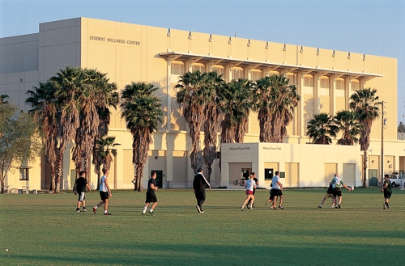

What is Special Olympics?
Special Olympics is the world's largest sports organization for children and adults with intellectual disabilities, providing year-round training and competitions to 5 million athletes and Unified States Sports partners in 172 countries. Special Olympics competitions are held every day, all around the world—including local, national and regional competitions, adding up to more than 100,000 events a year.
UM Special Olympics Club
The University of Miami Special Olympics Club began in 2014. It began as a bridge to serve the gap between the university and the Special Olympics organization. Special Olympics UM serves as a subsection of Special Olympics Miami-Dade, which is an umbrella organization that represents the entirety of Miami-Dade County. The main activities for the club include flag football, soccer, and basketball, which we practice in preparation for county competitions, and eventually state competitions at Walt Disney World.
How to get involved
Getting involved with Special Olympics UM is easy. Practices are held every Tuesday from 7:30-9 on the IM Fields outside the freshman dorms. During the semester, we also has numerous volunteer opportunities in the communities that are open to members of the club. Be sure to add Special Olympics UM on OrgSync to qualify as a member of the club.
